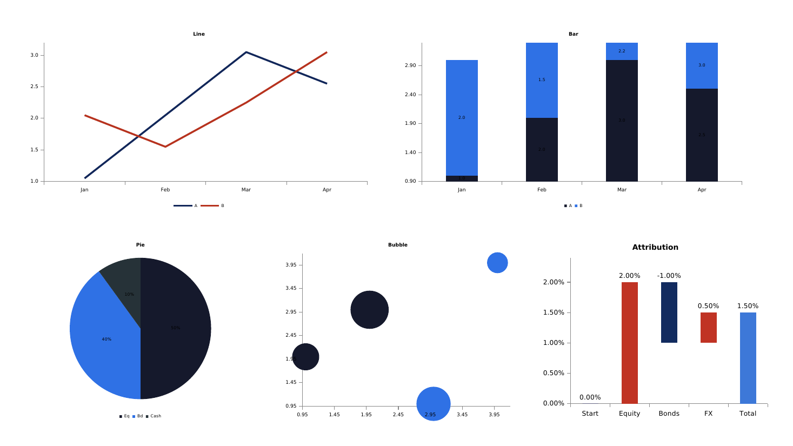

Native PowerPoint charts¶
All chart classes share the same base parameters and a .chart() method that inserts the chart in the slide. This page documents the parameters of each class and shows a complete example.

Shared parameters¶
Every class inherits these fields (BasePowerPointChart):
| Field | Default | Description |
|---|---|---|
presentation |
required | A pptx.Presentation (ValueError if None). |
slide |
0 |
Position of the target slide. Out of range raises ValueError. |
position_x, position_y |
5, 5 |
Top-left corner, in cm. |
width, height |
10, 10 |
Size, in cm. |
title_show, title |
False, "" |
Chart title. |
font_name |
"Inter" |
Font of titles, legend and axes. |
title_font_size |
6 |
Title size (pt). |
legend_show |
False |
Show the legend. |
legend_font_size |
5 |
Legend size (pt). |
legend_position |
"bottom" |
"bottom", "top", "right", "left", "corner". |
Shared value / category axis fields of the category charts (LineChart, BarChart, BubbleChart):
| Pattern | Meaning |
|---|---|
x_axis_title_show, x_axis_title, x_axis_font_size, x_axis_number_format |
Category (x) axis: title, size (pt), Excel number format ("0.00", "0%", "mmm-yy"). |
y_axis_title_show, y_axis_title, y_axis_font_size, y_axis_number_format, y_axis_gridlines_show |
Value (y) axis. |
y_axis_minimum_adjustment, y_axis_maximum_adjustment |
Percentage margin added below the minimum and above the maximum of the data to set the axis range automatically. |
Automatic axis range
The value axis limits are calculated from the data (min and max of all values, plus the adjustment percentages). For stacked bars the maximum is computed from the individual values, not from the stack totals: increase y_axis_maximum_adjustment (for example 100) so the tallest stack is not cut.
Reference keys:
| Setting | Valid keys |
|---|---|
legend_position |
bottom, top, right, left, corner |
data_labels_position |
outside, outside_end, inside_base, inside_end, center, best_fit, left, right, top, bottom |
axis *_position |
low, high, center, next_to_axis, none |
An invalid key raises ValueError naming the parameter and the valid options.
Preparing the data¶
import numpy as np
import pandas as pd
import helpers_ps as hp
from pptx import Presentation
from pptx.util import Cm
prs = Presentation()
prs.slide_width, prs.slide_height = Cm(33.867), Cm(19.05) # 16:9
prs.slides.add_slide(prs.slide_layouts[6]) # blank slide
months = ["Jan", "Feb", "Mar", "Apr", "May", "Jun"]
df = pd.DataFrame(
{"Portfolio": [1.2, 0.8, -0.4, 1.6, 0.9, 1.1], "Benchmark": [1.0, 0.9, -0.2, 1.1, 0.7, 1.0]},
index=months,
)
LineChart¶
Line chart with one or more series. Because PowerPoint line charts are category charts, every series must share the same categories (ValueError otherwise).
| Field | Description |
|---|---|
series_names: list[str] |
One name per series. |
x_values: list[list] |
Categories for each series (the same list repeated). |
y_values: list[list[float]] |
Values for each series. |
colors: list[str] |
Hex colors per series (default: the house palette). |
line = hp.Ppt.LineChart(
presentation=prs, slide=0,
position_x=1, position_y=1, width=15, height=8,
title_show=True, title="Monthly return (%)",
series_names=list(df.columns),
x_values=[df.index.tolist()] * len(df.columns),
y_values=[df[c].tolist() for c in df.columns],
colors=["#12275A", "#B7331F"],
legend_show=True, legend_position="bottom",
y_axis_gridlines_show=True, y_axis_number_format="0.0",
).chart()
type(line).__name__
BarChart¶
Column / bar chart (clustered, stacked, 100% stacked). Same data fields as LineChart, plus data labels. The chart type is chosen when you call .chart(chart_type):
chart_type |
Result |
|---|---|
"COLUMN_CLUSTERED" (default), "COLUMN_STACKED", "COLUMN_STACKED_100" |
Vertical columns |
"BAR_CLUSTERED", "BAR_STACKED", "BAR_STACKED_100" |
Horizontal bars |
| Field | Default | Description |
|---|---|---|
data_labels_show |
False |
Show values on the bars. |
data_labels_position |
"center" |
See the keys above. |
data_labels_number_format |
"0.0" |
Excel number format ("0.0%"...). |
data_labels_font_size |
5 |
Label size. |
x_axis_position, y_axis_position |
"center" |
Tick label position ("low" keeps labels at the bottom when there are negative bars). |
y_axis_minimum_adjustment, y_axis_maximum_adjustment |
10.0 |
Axis margins (%). |
bar = hp.Ppt.BarChart(
presentation=prs, slide=0,
position_x=17, position_y=1, width=15, height=8,
title_show=True, title="Return by month",
series_names=list(df.columns),
x_values=[df.index.tolist()] * 2,
y_values=[df[c].tolist() for c in df.columns],
colors=["#12275A", "#B7331F"],
data_labels_show=True, data_labels_position="outside_end", data_labels_number_format="0.0",
x_axis_position="low",
legend_show=True,
).chart("COLUMN_CLUSTERED")
type(bar).__name__
PieChart¶
One series: series_name, categories and values. Colors apply per slice.
| Field | Default | Description |
|---|---|---|
series_name |
"" |
Name of the series. |
categories, values |
[] |
Same length (ValueError otherwise). |
colors |
palette | Hex colors per slice. |
title_show |
True |
Unlike the other charts the title is on by default. |
data_labels_show, data_labels_position, data_labels_number_format, data_labels_font_size |
False, "center", "0.0", 5 |
Slice labels. Use "0%" for fractions that sum to 1. |
pie = hp.Ppt.PieChart(
presentation=prs, slide=0,
position_x=1, position_y=10, width=10, height=8,
title="Allocation", series_name="Weight",
categories=["Equity", "Bonds", "Cash"],
values=[0.5, 0.4, 0.1],
colors=["#12275A", "#3075DB", "#B7331F"],
data_labels_show=True, data_labels_number_format="0%", data_labels_font_size=7,
legend_show=True,
).chart()
type(pie).__name__
BubbleChart¶
Each series needs x values, y values and bubble sizes (same lengths). Axis limits are adjusted on both axes through x_axis_minimum_adjustment / x_axis_maximum_adjustment and the y_axis_* equivalents (default 5%).
| Field | Description |
|---|---|
series_names |
One name per series. |
x_values, y_values, bubble_sizes |
list[list[float]], one list per series. |
colors |
Hex color per series (bubbles have no border). |
bubble = hp.Ppt.BubbleChart(
presentation=prs, slide=0,
position_x=12, position_y=10, width=10, height=8,
title_show=True, title="Risk vs return",
series_names=["Strategy A", "Strategy B"],
x_values=[[6.0, 8.5], [4.0, 10.0]], # volatility
y_values=[[4.0, 6.5], [2.5, 7.0]], # return
bubble_sizes=[[10, 25], [8, 15]], # assets
x_axis_title_show=True, x_axis_title="Volatility (%)",
y_axis_title_show=True, y_axis_title="Return (%)",
).chart()
type(bubble).__name__
WaterfallChart¶
PowerPoint (through python-pptx) has no native waterfall type, so the class builds one with a stacked column chart that uses hidden base series plus visible increase, decrease and total series.
| Field | Default | Description |
|---|---|---|
categories |
[] |
Labels on the x-axis. |
values |
[] |
One value per step. Use decimals for percentages (0.012 is 1.2%). |
bar_types |
[] |
One entry per category: "total" marks a total bar (drawn from zero in total_color); anything else ("") is a contribution (increase / decrease). |
increase_color, decrease_color, total_color |
RGBColor red / navy / blue |
Colors (pptx.dml.color.RGBColor). |
data_labels_show |
False |
Show the value of each step. |
data_labels_position |
"inside_base" |
See the keys above. |
data_labels_number_format |
"0.00%" |
|
y_axis_number_format |
"0.00%" |
|
x_axis_position, y_axis_position |
"low" |
Tick label position. |
y_axis_minimum_adjustment, y_axis_maximum_adjustment |
20 |
Axis margins (%). |
reset_running_total_except_last |
True |
After a "total" bar the running total restarts, except for the last one. |
waterfall = hp.Ppt.WaterfallChart(
presentation=prs, slide=0,
position_x=23, position_y=10, width=10, height=8,
title="Return attribution", title_font_size=9,
categories=["Start", "Equity", "Bonds", "FX", "Total"],
values=[0.0, 0.020, -0.010, 0.005, 0.015],
bar_types=["", "", "", "", "total"],
data_labels_show=True,
).chart()
type(waterfall).__name__
categories, values and bar_types must have the same length.
Save the presentation¶
OutputPlacing several charts on a slide¶
hp.Ppt.layouts contains predefined grids as dictionaries: height and width (cm) common to all charts, and the lists position_x and position_y with one position per chart, in reading order (left to right, top to bottom). Their coordinates fit a 16:9 slide of 33.87 x 19.05 cm (13.33 x 7.5 in), the size used in the examples; check them against your template and scale them if the slide size is different.
| Constant | Grid | Charts |
|---|---|---|
LAYOUT2_2 |
2 columns x 2 rows | 4 |
LAYOUT3_2 |
3 columns x 2 rows | 6 |
LAYOUT3_3 |
3 columns x 3 rows | 9 |
LAYOUT4_3 |
4 columns x 3 rows | 12 |
layout = hp.Ppt.layouts.LAYOUT3_2
for i, column in enumerate(columns[:6]):
hp.Ppt.LineChart(
presentation=prs, slide=0,
position_x=layout["position_x"][i],
position_y=layout["position_y"][i],
width=layout["width"],
height=layout["height"],
title_show=True, title=column,
series_names=[column],
x_values=[dates],
y_values=[df[column].tolist()],
).chart()
Modifying a chart after creation¶
.chart() returns the native chart, so anything python-pptx offers is available:
from pptx.util import Pt
from pptx.dml.color import RGBColor
plot = line.plots[0]
plot.series[0].format.line.width = Pt(2.5)
plot.series[0].smooth = False
line.value_axis.has_major_gridlines = True